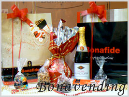
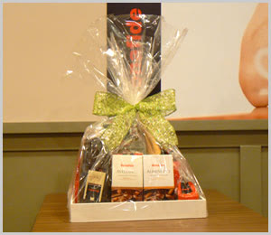
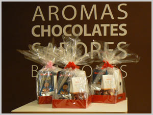
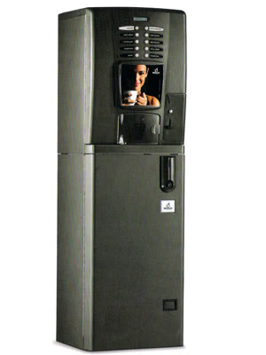
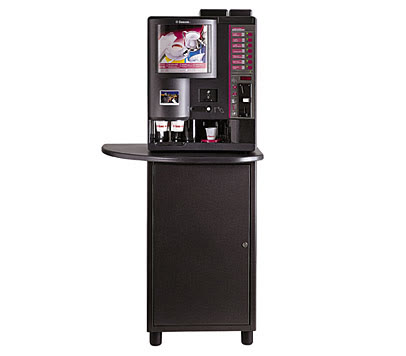
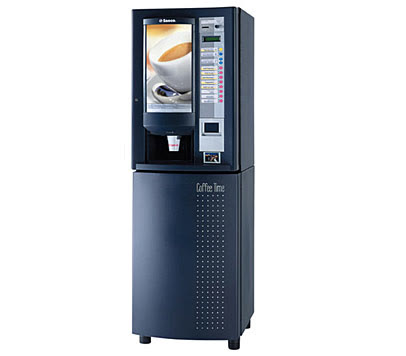
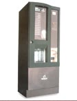
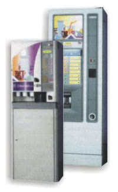
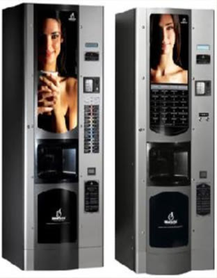

Bonavending es un servicio de vending de cafés para empresas: colocamos las máquinas en comodato y te proveemos los insumos, con café en grano de la línea Bonafide.
Pedís la provisión directa de nuestra línea de productos a tu empresa: café Bonafide en grano, leche, chocolate, té, caldo, mate y descartables. También para empresas gastronómicas.
Servicio técnico especializado y reparación de averías a nuestro cargo
Cómo se usa la máquina
Elegís el sistema de expendio según tu empresa:
01Expendio libre02Fichas o cospeles03Monedas04Llaves
Por qué en tu empresa
Se usa a cualquier hora
Menos costo y menos tiempo
Ocupa poco espacio
Vos elegís los productos
“Podés contar con nuestro servicio las 24 hs. del día, los 365 días del año.” Repositores y técnicos con trato personalizado.
Regalos empresarialesFaltan — días para Navidad
Cajas navideñas para tu empresa.
Canastas, sets navideños y bandejas con productos Bonafide para regalarle a tu equipo, a tus clientes o a tus proveedores. Pedinos el catálogo 2026 por WhatsApp.



Lo que suelen llevar nuestras cajas
Pan dulce y budín
Turrones
Garrapiñada
Almendras y avellanas bañadas
Chocolate en rama
Champagne o sidra
Fotos de temporadas anteriores. El armado 2026 viene en el catálogo.
Expendedoras de bebidas calientes de las líneas Saeco, Zanussi y Bianchi, para oficinas chicas o grandes plantas. Te recomendamos la que va con tu empresa y te confirmamos la disponibilidad actual.

Línea Bianchi · de mesa
Bianchi Iris
Selecciones
10
Vasos
180
Table top: va arriba de una mesada. Para oficinas chicas.

Línea Saeco
Saeco DAP-7 Plus
Bebidas
hasta 7
Vasos
300
Sistema rotatorio de vasos en el mínimo espacio.

Línea Saeco
Saeco DAP-8
Vasos y paletinas
automático
Azúcar
automática
Varias selecciones de bebidas y preselecciones.

Línea Bianchi
Bianchi Mitos
Selecciones
10 + 3 presel.
Vasos
400
Diez selecciones directas y tres botones de preselección.

Línea Zanussi · alto tránsito
Zanussi Brio 200 / 250
Selecciones
16
Vasos
desde 600
Para grandes grupos de personal: espresso corto y largo, cortado, con leche, capuchino, chocolate, té al limón y descafeinado.

Línea Bianchi · alto tránsito
Bianchi BVM 972
Selecciones
hasta 56
Vasos
700
Regula sola el molido del grano de café.
Fotos y datos de los equipos de nuestro catálogo. La disponibilidad de cada modelo te la confirmamos por WhatsApp.
B2 · Armá tu propuesta
Armá el café de tu oficina.
Contestá unas preguntas y la máquina te devuelve el ticket: equipo sugerido, modalidad y tu consulta lista para mandar por WhatsApp.
PERSONAS: —
BEBIDAS: —
MODALIDAD: —
ELEGÍ PERSONAS Y BEBIDAS
Equipo sugerido · orientativoContestá las preguntas
BONAVENDING · TU CONSULTA
A3 · Provisión de insumos
Insumos para tu máquina de café.
Productos de primera marca, con café Bonafide en grano. Tocá lo que necesitás y armá la lista: disponibilidad, presentaciones y precios te los pasamos por WhatsApp.
Contanos cuántas personas son, qué toman y dónde está la empresa.
2
Te armamos la propuesta
Equipo, modalidad (Fullservice o Autoservice), sistema de expendio e insumos.
3
Instalamos
Llevamos e instalamos la máquina sin cargo y coordinamos la reposición.
Preguntas frecuentes
¿Cómo es el comodato?
Las máquinas se instalan en tu empresa en calidad de comodato. Elegís la modalidad (Fullservice o Autoservice) y el sistema de expendio según lo que necesites; los detalles te los pasamos por WhatsApp.
¿Qué diferencia hay entre Fullservice y Autoservice?
En Fullservice nos encargamos de la reposición diaria, la limpieza y el mantenimiento. En Autoservice recibís las máquinas instaladas, servicio técnico y un kit de insumos; la reposición la hacés vos y cuando lo necesitás te enviamos otro kit.
¿En qué zonas trabajan?
Escribinos por WhatsApp con la localidad de tu empresa y te confirmamos.
¿Puedo pedir solo insumos?
Sí: con la modalidad Provisión de insumos te llevamos los productos directamente a tu empresa. También proveemos insumos de cafetería para empresas gastronómicas.
¿Qué máquinas tienen disponibles hoy?
Trabajamos con equipos Saeco, Zanussi y Bianchi. La disponibilidad actual te la confirmamos por WhatsApp según tu empresa.
¿Cuánto cuesta?
Depende de la modalidad, el equipo y el consumo. Te pasamos la propuesta por WhatsApp.
Imagen ilustrativa
¿Arrancamos con el café de tu oficina?
Máquinas, insumos o cajas navideñas: escribinos y te respondemos por WhatsApp.